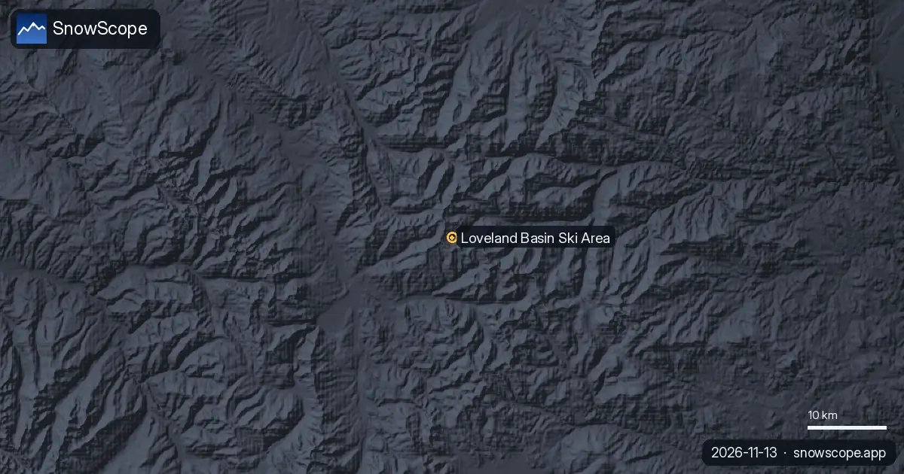

Il salto di prezzo di dicembre a Loveland: 60 $ prima del 14 dicembre, 159 $ dopo
Loveland ha il salto di prezzo più netto tra tutti i biglietti di dicembre che abbiamo verificato: 60 $ online in anticipo fino al 13 dicembre, poi un prezzo alla cassa di 159 $ dal 14 dicembre. La vera domanda per uno sciatore di Denver è se inizio dicembre ha abbastanza neve da rendere le settimane economiche convenienti.
Le previsioni neve in tempo reale per Loveland Basin Ski Area nell'app SnowScopeAltezza neve, allerte powder e mappa 3D, gratis.
Il salto, in un paragrafo
Per il 2026-27, la stagione anticipata di Loveland copre fino al 13 dicembre. In quel periodo un biglietto adulti costa 119 $ alla cassa o 60 $ online in anticipo. Dal 14 dicembre inizia la stagione regolare e il prezzo alla cassa sale a 159 $, con un numero limitato di sconti online anticipati. La stazione vende anche un 4-Pak: quattro skipass per 299 $.

C'è neve a inizio dicembre?
Di solito sì, almeno in quota. Loveland è una delle stazioni più alte del paese, con impianti da circa 10.890 ft (3.318 m) a 12.680 ft (3.866 m) sulla nostra mappatura, e la neve persistente arriva a mezza montagna verso fine settembre in un inverno tipico.
In un tipico 1° dicembre, a mezza montagna, circa 11.780 ft (3.592 m), ci sono 20 in (50 cm). Il 15 dicembre, 29 in (74 cm). La quota di inverni con buona neve lì (una media settimanale di 20 in, 50 cm, o più) è del 54 % nella prima settimana di dicembre e del 61 % nella seconda, contro il 74 % e l'80 % nelle due settimane successive. Le settimane economiche sono quindi anche le meno certe: di solito si scia, ma spesso su una base più sottile.

Un dicembre magro o abbondante
Il divario è ampio. Un dicembre magro (un inverno su dieci) aveva 11 in (27 cm) a mezza montagna il 15; un inverno abbondante 50 in (128 cm). Nell'89 % degli inverni c'erano almeno 10 in (25 cm) a quella data, il che su una montagna alta ed erbosa della Continental Divide basta per piste battute.
L'inizio stagione si è un po' assottigliato. Lo spessore tipico del 15 dicembre a mezza montagna era di 32 in (81 cm) nei primi 15 inverni della nostra serie storica e di 23 in (58 cm) negli ultimi 15.
Loveland, Ski Cooper, Wolf Creek e Vail
Ski Cooper, vicino a Leadville, fa pagare 49 $ nei giorni feriali e 99 $ nel weekend e nei festivi, con 26 in (66 cm) a mezza montagna in un tipico 15 dicembre. Wolf Creek fa pagare 96 $ nei giorni normali e 110 $ nei giorni di punta, con 34 in (87 cm). Vail, il grande nome più a valle sulla I-70, secondo i nostri dati aveva 24 in (62 cm) a mezza montagna in un tipico 15 dicembre; non abbiamo confrontato i suoi prezzi.
Loveland fa parte anche dell'Indy Pass: l'Indy Base Pass costa 419 $ e l'Indy+ Pass 469 $, ciascuno con due giorni in ogni stazione aderente.
Chi dovrebbe andare presto, chi dovrebbe aspettare
Se sciate su piste battute e vivete nel Front Range, le giornate online a 60 $ prima del 14 dicembre sono la migliore offerta di dicembre di questa lista, e la neve di un tipico inizio dicembre è sufficiente per approfittarne. Se volete tutta la montagna aperta, aspettate la seconda metà del mese e considerate il 4-Pak o uno stagionale invece del prezzo alla cassa di 159 $.
Consigli per sciatori
- Comprate online, in anticipo, per qualsiasi data fino al 13 dicembre: il prezzo alla cassa è quasi il doppio.
- Dal 14 dicembre, il 4-Pak a 299 $ batte di gran lunga quattro biglietti alla cassa.
- La I-70 e la zona del tunnel Eisenhower subiscono chiusure invernali: controllate il CDOT e partite presto.
- A 12.000 ft il vento morde: portate un copriviso e degli scaldamani.
Riferimenti e crediti
- Loveland Ski Area, lift tickets 2026-27 (official) skiloveland.com/lift-tickets/
- Indy Pass, shop 2026-27 (official) www.indyskipass.com/shop
- Ski Cooper, day pass 2026-27 (official) www.skicooper.com/cooper-day-pass/
- Wolf Creek Ski Area, tickets and passes 2026-2027 (official) wolfcreekski.com/tickets-passes/
- OpenSkiMap (mapped lifts and runs) openskimap.org/
- avalanche.org, US avalanche centers and forecasts avalanche.org/
Su questi numeri
Numeri della neve: storico neve SnowScope, 46 inverni passati (1980-81 - 2025-26) alle quote indicate (base, metà, vetta), una ricostruzione della neve passata per un'area corretta per la quota (basata su ERA5-Land; Snow_Hydro 1 km per il Marocco), non i bollettini della località. Neve attuale: la mappa SnowScope. Impianti, piste e quote: mappatura OpenSkiMap. Prezzi: le pagine ufficiali elencate qui sotto, lette il 13 novembre 2026; i prezzi dinamici cambiano con la data e la domanda.
Bollettini valanghe ufficiali: Colorado Avalanche Information Center
Cita questo articolo
Per ricerca, didattica o stampa: numeri e grafici sono liberamente riutilizzabili con licenza CC BY 4.0 citando così.
SnowScope (2026), Il salto di prezzo di dicembre a Loveland: 60 $ prima del 14 dicembre, 159 $ dopo, https://snowscope.app/blog/it/2026/11/loveland-ski-area-december-deal-2026.html, consultato il 2026-11-14
SnowScope (Atlas Labs). (2026, November 14). Il salto di prezzo di dicembre a Loveland: 60 $ prima del 14 dicembre, 159 $ dopo. SnowScope snow reports. https://snowscope.app/blog/it/2026/11/loveland-ski-area-december-deal-2026.html
BibTeX
@misc{snowscope2026lovelandskiareadecemberd,
author = {{SnowScope (Atlas Labs)}},
title = {Il salto di prezzo di dicembre a Loveland: 60 $ prima del 14 dicembre, 159 $ dopo},
year = {2026},
month = nov,
howpublished = {\url{https://snowscope.app/blog/it/2026/11/loveland-ski-area-december-deal-2026.html}},
note = {Published 2026-11-14 17:47 UTC; accessed 2026-11-14}
}· CC BY 4.0 · Metodi, dati e strumenti →
Loveland Basin Ski Area: neve e temperatura per quota, quest'inverno vs lo scorso (strumenti) →
Segui Loveland Basin Ski Area
Gratis: un messaggio quando arriva la neve e il meteo ogni mattina.